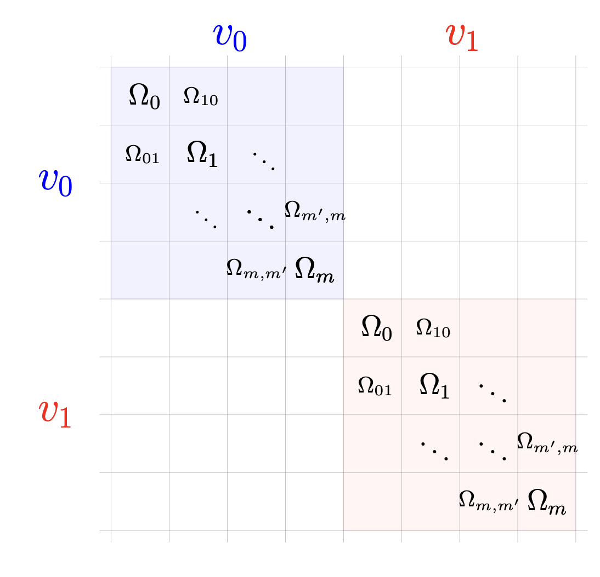
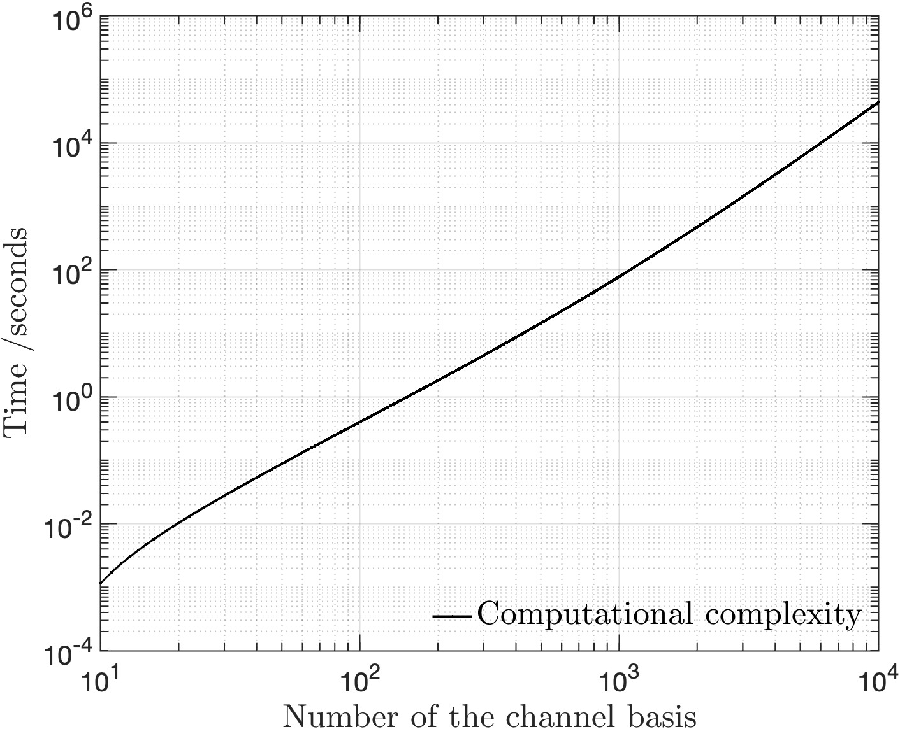

MolKet offers consulting and AI services for modeling quantum molecular solutions with cloud-based software on hybrid HPC and quantum computing platforms.
| Modeling the spectra of JWST >
- • In the PhD projects, Selim contributed to the development of efficient computational methods using quantum dynamics to simulate molecular collisions in space in protoplanetary disks.
- • Such simulations will provide the collision-induced rotational-vibrational transition rates needed by the molecular astronomers to interpret the spectra of probe molecules in protoplanetary disks.
Reference : • Multi-channel distorted-wave Born approximation for rovibrational transition rates in molecular collisions • Efficient computational methods for rovibrational transition rates in molecular collisions

| Reducing chemical waste >
For a personal care company:
- • A contribution to a theoretical modelling of using quantum control for chemical reactions.
- • Such theoretical study contributed to paving the way for designing the parameters of femto/atto-second laser pulses that can control the chemical reactions.
- • Such engineered pulse will select the favorable product channel resulting in reducing the chemical & material waste
Reference : • Control of Quantum Interference in Molecular Processes.

| Quantum molecular simulations are computationally challenging >
- • Quantum molecular simulations are important to simulate quantum molecular sensors, chemical reactions, controlled molecular processes, molecular collisions, molecular interactions, and molecular design.
- • Quantum molecular simulations are computationally challenging.
- • Example: the time-independent solution of Schrödinger's equation, called coupled-channels (CC) method.

| Computation time scales cubically with the number of equations being solved >
- • Solving the time-independent Schrödinger equation scales cubically with the number of equations being solved.
- • Such theoretical study contributed to paving the way for designing the parameters of femto/atto-second laser pulses that can control the chemical reactions.
- • An efficient quantum simulation engine is needed to overcome this computational complexity challenge.
- • The plot on the right is made by fitting three data
points using 3rd degree polynomial for the data mentioned in the
following published paper:
Selim et al., J. Chem. Phys. 157, 064105 (2022)
• arXiv: 2206.04470
• JCP: 10.1063/5.0102224
